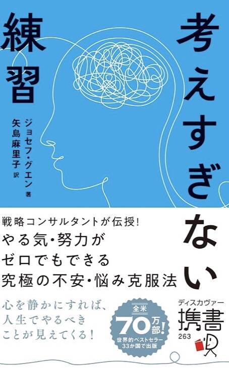

🌀 Stop Overthinking Practice
I read a book called Stop Overthinking Practice.
It was written by Joseph Nguyen. (The English original is Don't Believe Everything You Think.)
It sold 700,000 copies in the United States and was published in 33 countries.
The content matches the title: do not overthink.
The sentence that hit me the most in the book was this.
It was placed there as a quote.
“I have missed happiness many times because I thought and thought, but I have never become happy because I thought and thought.”
When I read it, I had nothing but things that fit me.
When I look back at my life, I have far more times when timing passed while I was thinking than times when things went well because I thought.
Think
Timing passes
Same place
I think thinking helps only in areas where there is an answer, like design and calculation.
If you keep thinking in areas with no answer, you do not get more material.
You only go around and around in the same place.
As philosophers often say, this is an area where facts do not exist, so a correct answer cannot come out.
